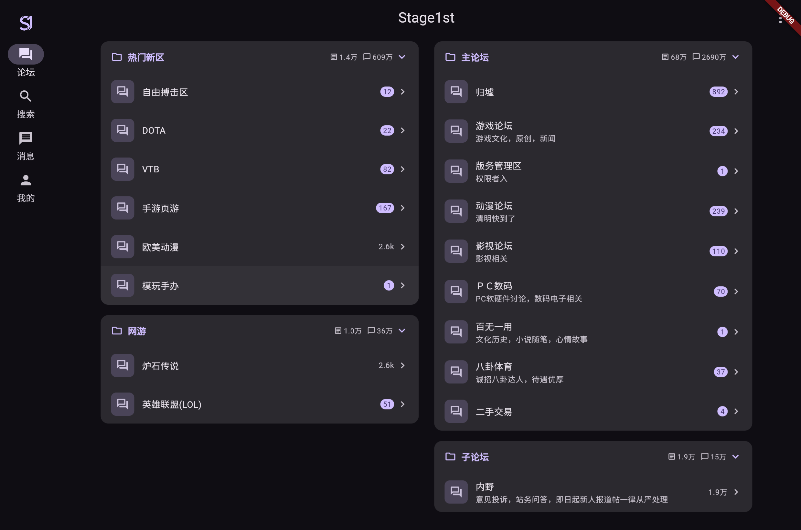

浏览与阅读
版块、主题列表、分页与楼层定位；常用 BBCode、引用、代码与帖内图片，深色模式下也能长时间刷帖。
功能
对接 Discuz! Mobile API，Material Design 3 界面，把论坛常用路径收进一套客户端。
版块、主题列表、分页与楼层定位；常用 BBCode、引用、代码与帖内图片，深色模式下也能长时间刷帖。
回复、引用、发新主题与编辑；内置 S1 麻将脸表情面板，插图经外链图床上传，流程贴合社区习惯。
亮暗色与多套种子色、字号调节；阅读历史、回复草稿、本地黑名单与 L1 备份，数据留在你的设备上。
平台
Flutter 目标覆盖 Web、Android、iOS、Windows、macOS 与 Linux。发布包以 GitHub Releases 为准；当前为 Beta，关键路径以 Web 与 Android 验收为主。

说明
本项目与 Stage1st 官方无隶属、授权或背书关系。使用时须遵守 Stage1st 的服务条款与社区规则；论坛接口或权限变化可能影响部分功能。
Cookie 在本地加密存储；密码不落盘。详见 隐私政策。